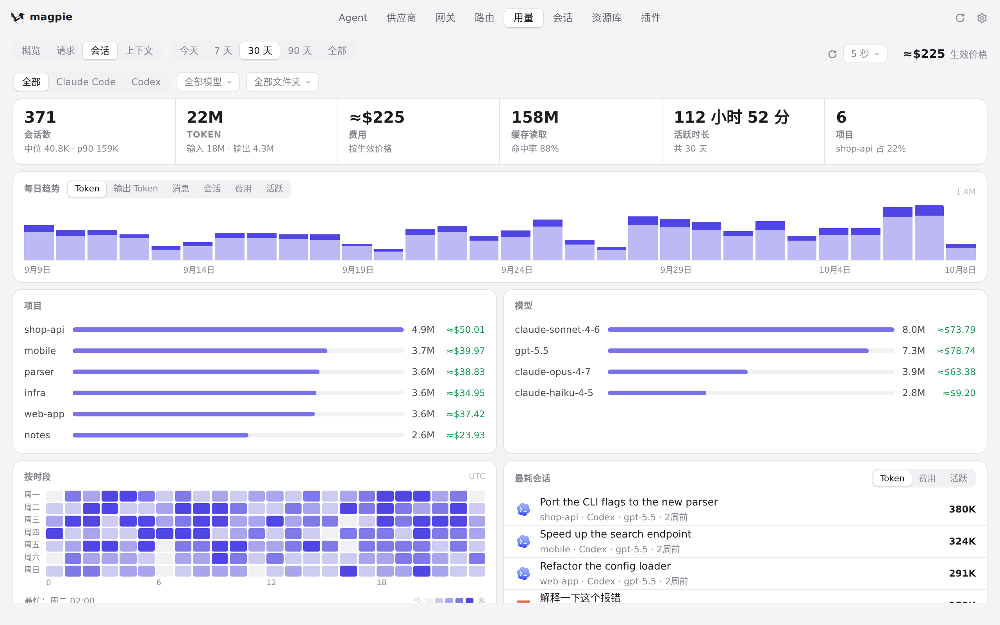

#1033 界面预览
commit 64b4bfb · 回到 PR · 这个 diff 让会话子系统能读取 Reasonix 的本地会话（旧 JSONL、1.x 用量账本、2.29.0 wire/telemetry 以及 events/v3、linear/v3、v3.1、v4 存储），因此在「用量 › 会话」里会出现 Reasonix 会话；同时在会话行/详情新增「用量历史不完整」提示，并在存在无法读取或未知数据的 Reasonix 存储时用列表统计行/备注显示兼容性说明（zh/ja/de 文案齐全）。
红线是鼠标走过的轨迹，红色圆环是一次点击；底部文字是这一步在做什么。空格暂停，← → 逐段查看。

用量 › 会话：会话列表与用量提示 · 用量 › 会话：会话列表与上方的 Agent 过滤条
用量 › 会话：会话列表与用量提示 · 列表上方的统计与提示行